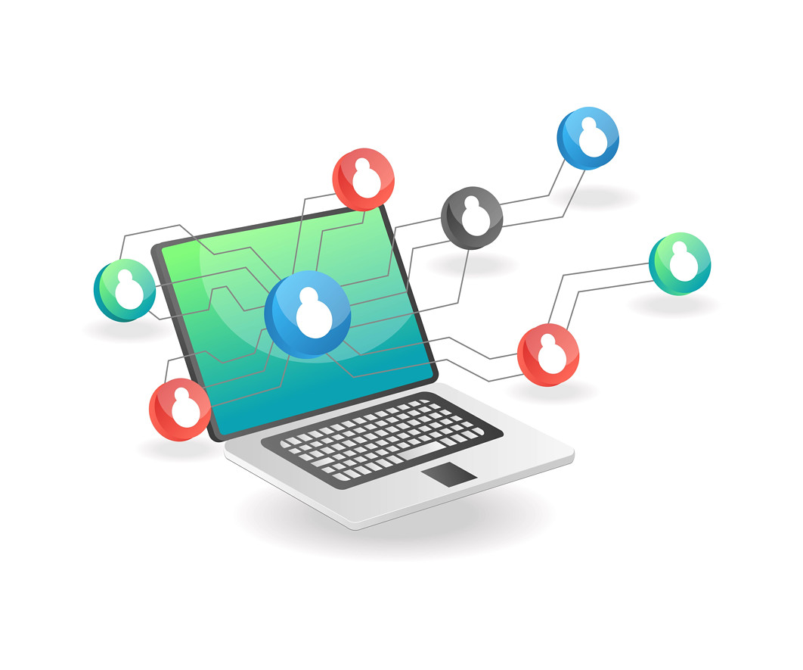

たとえば、こんな課題を解決します

手作業のExcel集計をワンクリックに
毎月数日かかっていた複数ファイルの転記やデータ集計を、瞬時に完了するツール化。人的な入力ミスを防ぎ、スタッフの事務負担を大幅に軽減します。

散在する情報の一元管理と活用
担当者ごとにバラバラに管理されている顧客データや人材データを整理し、Web上でスムーズな検索やマッチングができる独自の管理システムを構築します。
市販ソフトが合わない独自業務のシステム化
売上管理や工程管理など、会社独自の複雑な業務フローに合わせた専用システムを開発。パッケージソフトではどうしても手が届かない「痒いところ」をカバーします。